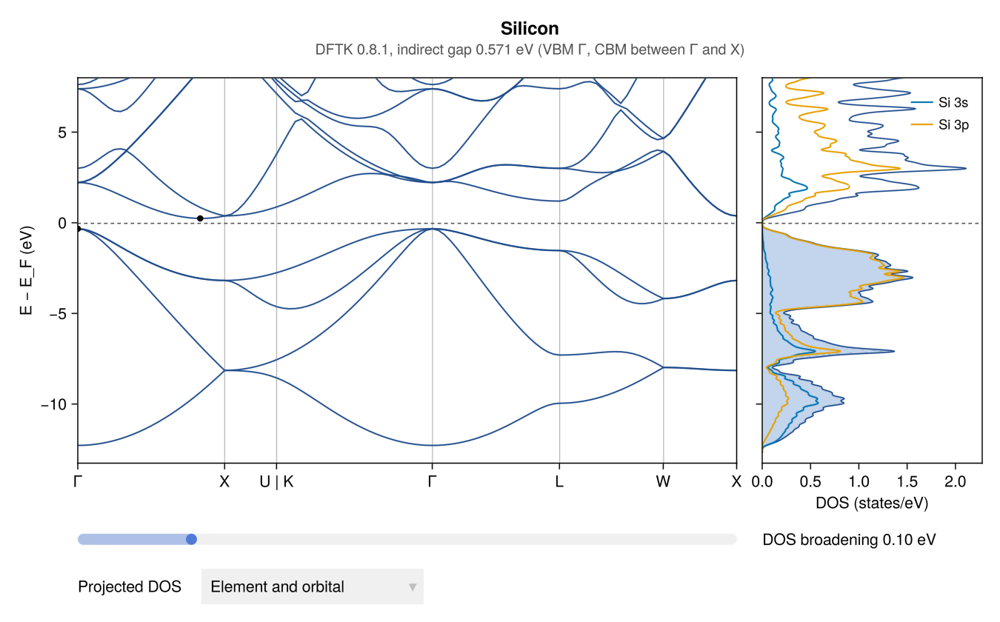
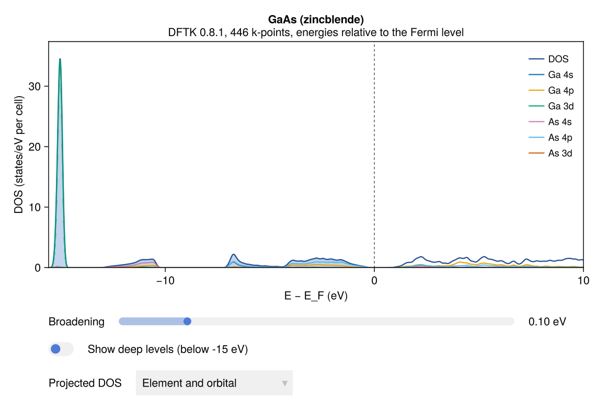
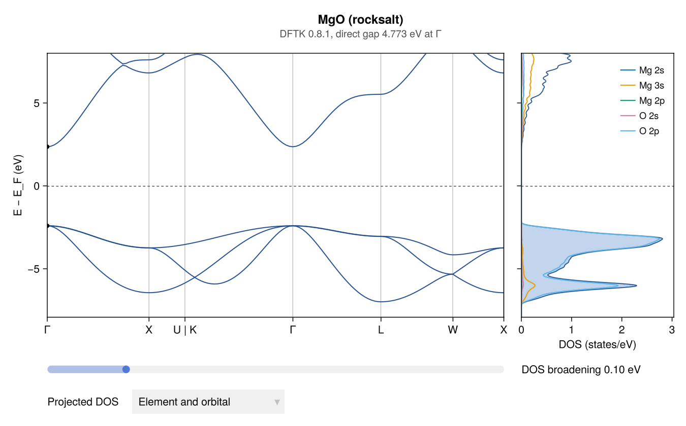

Examples of calculations
These figures come from real DFTK runs started from AtomBond, with the structures of the built-in library. The windows look the same when the run is started from File → Run calculation…; this page shows the code that does it without the window. Each figure has a Save button that writes the picture and the data as CSV.
DFTK is the default engine and is installed on the first run (Running DFTK). The same figures work for Quantum ESPRESSO and CASTEP runs, or for a code you add yourself (DFT engines), as far as the results contain the levels or the relaxation steps.
Band structure and DOS of silicon
using AtomBond
si = primitive_cell(load_library("Silicon"))
job = run_dftk(si; bands=true, ecutwfc=recommended_ecut(si), kspacing=0.2)
wait(job)
r = job_results(job)
plot_bands(r) # band structure next to the DOS
The band structure follows the standard high-symmetry path of the lattice. The valence-band maximum and the conduction-band minimum are marked, and the subtitle gives the gap: indirect for silicon, 0.57 eV with PBE (PBE underestimates gaps; the measured gap is 1.12 eV).
Projected DOS of GaAs
With orbital projections, the DOS shows each element's s, p and d states (the Projected DOS menu changes the grouping). The narrow peak at −15 eV is the Ga 3d band. The As 3d levels, near −35 eV, are left out of the view until Show deep levels is switched on. The gap is direct at Γ, 0.52 eV with PBE (measured: 1.42 eV).
gaas = primitive_cell(load_library("Gallium arsenide (GaAs)"))
job = run_dftk(gaas; bands=true, ecutwfc=recommended_ecut(gaas), kspacing=0.2)
wait(job)
plot_dos(job_results(job))
Band structure of MgO
An ionic insulator: the valence band is O 2p, and the gap is direct at Γ, 4.77 eV with PBE (measured: 7.8 eV).
mgo = primitive_cell(load_library("Magnesium oxide (MgO)"))
job = run_dftk(mgo; bands=true, ecutwfc=recommended_ecut(mgo), kspacing=0.2)
wait(job)
plot_bands(job_results(job))